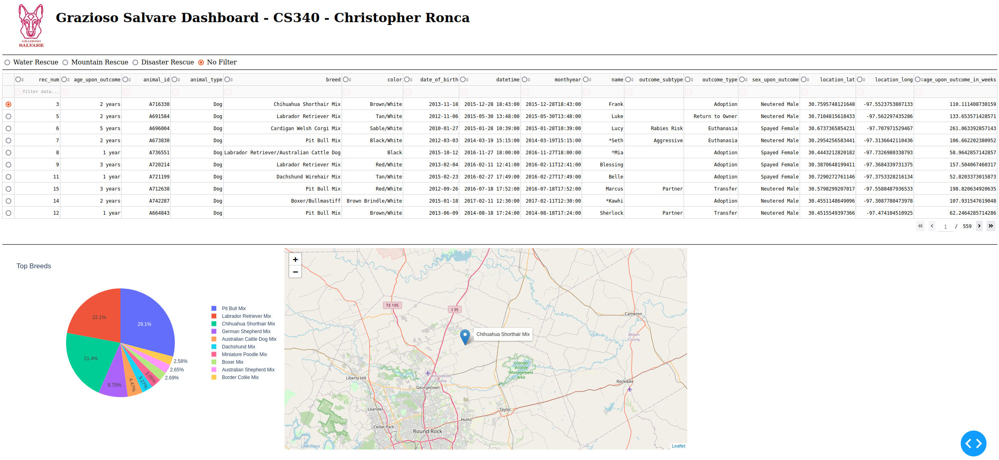

Introduction
Hello, my name is Christopher Ronca, and I am proud to present my ePortfolio as I complete my Bachelor of Science in Computer Science with a concentration in Software Engineering at Southern New Hampshire University (SNHU). I began this academic journey in August 2020 while serving in the United States Air Force, and after retiring from a 20-year military career, I have dedicated myself fully to advancing my education and preparing for a new chapter in the technology field.
Throughout my time in the Computer Science program, I have gained a strong foundation in both the theory and practice of software development. Three of the most important skills I have developed are:
Software Development: I have learned to design, build, and integrate both front-end and back-end applications. This includes working with multiple programming languages, connecting user interfaces to databases, and ensuring that applications are modular, maintainable, and scalable.
Algorithmic Problem Solving: I have honed my ability to analyze problems, design efficient algorithms, and implement appropriate data structures. This has enabled me to write code that is not only correct but also optimized for performance and resource usage—an essential skill for real-world software engineering.
Database Design and Management: I have gained hands-on experience with both relational (SQL) and non-relational (NoSQL) databases, learning how to model data, write complex queries, and ensure data integrity and security. Understanding the strengths and trade-offs of different database systems has been crucial for building robust, data-driven applications.
The enhancements showcased in this portfolio are designed to demonstrate my proficiency in several key areas aligned with the program’s outcomes. Through my work, I aim to highlight:
- Full-Stack Application Architecture: By converting my project to a PERN stack single-page application, I demonstrate the ability to design and implement a modern, modular web application, clearly separating concerns between the frontend (React), backend (Express/Node.js), and database (PostgreSQL).
- Technology Adaptability: Migrating from a Python/MongoDB backend to JavaScript/Node.js and PostgreSQL illustrates my capacity to learn and apply new languages, frameworks, and paradigms.
- RESTful API Design: I have designed and implemented RESTful endpoints to handle CRUD operations, authentication, and error management—essential skills for scalable software engineering.
- UI/UX Principles: Using React, I have built a responsive, interactive user interface, applying best practices in component-based design and state management.
Ultimately, these experiences have helped me become a well-rounded developer who can adapt to new technologies and contribute meaningfully to any team. This project, in particular, has given me hands-on experience with the tools and workflows used in the industry, deepened my understanding of scalable and efficient application design, and strengthened my confidence to take on complex projects in my chosen field. I am excited to bring these skills into my career and to solve real-world problems with creativity and confidence.
Professional Self-Assessment
Completing my coursework in the Computer Science program and developing my ePortfolio have been transformative experiences that have both showcased my strengths and shaped my professional goals. Throughout the program, I have gained not only technical proficiency but also a deeper understanding of the collaborative, communicative, and ethical dimensions of the field. These experiences have prepared me to contribute effectively in professional environments and have reinforced my commitment to technical excellence, user-centered design, and lifelong learning. One of the most valuable aspects of my education has been the opportunity to collaborate in team environments. In several courses, I worked on group projects where we designed, implemented, and tested software solutions together. These experiences taught me how to communicate technical ideas clearly, resolve conflicts constructively, and leverage the diverse strengths of my teammates. For example, in a software engineering course, I served as a team lead, coordinating our efforts to deliver a web application on a tight deadline. This role required me to balance technical responsibilities with project management and to ensure that all voices were heard during decision-making. Communicating with stakeholders has also been a key focus of my development. I have learned to translate complex technical concepts into language that is accessible to non-technical audiences, whether through written documentation, presentations, or client meetings. In my capstone project, I regularly updated my professor and peers on my progress, solicited feedback, and adapted my approach based on their input. This iterative communication process not only improved the quality of my work but also reinforced the importance of aligning technical solutions with user needs and organizational goals. My coursework has provided a strong foundation in data structures and algorithms, which I have applied to solve real-world problems efficiently. I have implemented and optimized algorithms for searching, sorting, and filtering data, both in academic assignments and in my capstone project. These skills have enabled me to design systems that are not only functional but also performant and scalable. In the areas of software engineering and databases, I have developed full-stack applications using modern frameworks and best practices. I am proficient in designing normalized relational schemas, writing secure and maintainable code, and integrating frontend and backend components. My experience with version control, automated testing, and continuous integration has prepared me to contribute effectively to professional software development teams. Security has been a consistent priority throughout my studies. I have implemented authentication and authorization mechanisms, protected sensitive data, and followed secure coding standards. I understand the importance of safeguarding user information and maintaining the integrity of software systems in an increasingly connected world. The artifacts included in my ePortfolio represent the culmination of these skills and experiences. Together, they demonstrate my ability to design, build, and secure complex software systems from the ground up. My portfolio includes a full-stack web application for managing animal shelter outcomes, which integrates advanced search and filtering, dynamic data visualization, and robust authentication. Each artifact highlights a different aspect of my expertise, whether it is database design, algorithmic problem-solving, or user interface development, collectively they provide a comprehensive view of my capabilities as a computer scientist. By assembling this portfolio, I have not only documented my technical achievements but also clarified my professional values: collaboration, clear communication, technical excellence, and a commitment to security and user-centered design. I am confident that the skills and mindset I have developed throughout this program have prepared me to make meaningful contributions in the computer science field, and I look forward to applying them as I advance in my career.
Portfolio Artifacts
-
Animal Shelter Outcomes Dashboard (Original Artifact)

The original version of this project was developed using Python, MongoDB, and Jupyter Notebook. It provided a foundational data analysis platform for animal shelter outcomes, enabling users to import, query, and visualize shelter data using Python scripts and interactive Jupyter notebooks. The backend leveraged MongoDB for flexible, document-based storage, while data exploration and reporting were performed through Python’s data science libraries. This early prototype laid the groundwork for later enhancements in software engineering, algorithms, and database design.
▶ Watch the code review on YouTube - Software Design and Engineering - Enhancement One The dashboard was designed to help users manage and visualize animal shelter data, and it was built using the PERN stack (PostgreSQL, Express, React, Node.js). I chose to include this artifact in my ePortfolio because it represents the culmination of my software engineering skills and demonstrates my ability to architect, implement, and secure a modern web application from the ground up. This artifact is significant because it showcases several core competencies in software development. The modular backend, built with Express and Node.js, is responsible for handling API requests, authentication, and business logic, while the React frontend provides a responsive and intuitive user interface. The application features secure authentication using JWTs and HTTP-only cookies, protected API routes, and robust error handling. The dashboard also integrates advanced search, filtering, and CRUD operations, as well as dynamic data visualizations using Chart.js and react-leaflet. These components collectively highlight my proficiency in designing scalable architectures, implementing security best practices, and delivering a seamless user experience. The process of enhancing this artifact was both challenging and rewarding. One of the most valuable lessons I learned was the importance of maintainable code structure and clear separation of concerns. Refactoring the backend to use middleware for authentication and error handling made the codebase more modular and easier to test. On the frontend, breaking down the UI into reusable React components improved both readability and scalability. I also learned to prioritize user feedback, iterating on the dashboard’s design to make it more intuitive and accessible. Incorporating feedback from peers and my instructor helped me identify usability issues and refine the application’s features. Security was a major focus during the enhancement process. Implementing JWT-based authentication and protecting sensitive routes required me to research and apply industry best practices. I gained a deeper appreciation for the complexities of secure session management and the importance of safeguarding user data. Additionally, integrating third-party libraries for data visualization and mapping taught me how to evaluate and incorporate external tools effectively. Throughout this process, I encountered several challenges, such as managing state across complex UI components and ensuring that asynchronous operations did not introduce bugs or inconsistencies. I addressed these challenges by leveraging React’s state management patterns and thoroughly testing each feature. The enhancement also required me to optimize API endpoints for performance and scalability, which involved writing efficient SQL queries and minimizing unnecessary data transfers. With this enhancement, I have fully met the course outcomes related to software design and engineering, including modular architecture, secure authentication, protected routes, and a modern SPA frontend. I also demonstrated my ability to incorporate feedback, iterate on design, and deliver a professional-quality application. This project has reinforced my passion for full-stack development and has given me the confidence to tackle complex, real-world software challenges in my future career. Original Artifact Repository | Enhanced Artifact Repository
- Algorithms and Data Structures - Enhancement Two This enhancement focused on the core algorithms and data structures that enable users to efficiently search, filter, and explore large datasets of animal shelter records. I included this artifact in my ePortfolio because it demonstrates my ability to design and implement performant algorithms and to structure data in a way that supports real-time, user-driven exploration skills that are essential for any software developer working with complex or growing datasets. This enhancement is particularly significant because it required me to move beyond basic CRUD operations and address the challenges of scalability and responsiveness. I implemented server-side pagination, multi-field search, and dynamic filtering algorithms that allow users to quickly find relevant records based on rescue type, name, breed, and ID. On the backend, I optimized SQL queries to minimize latency and ensure that filtering and search operations remained fast, even as the dataset grew. On the frontend, I used React’s state management and array methods to keep the user interface responsive and in sync with user input. I also transformed and aggregated data for visualization components, such as the pie chart and map, which required careful data manipulation and mapping. Reflecting on the process of enhancing this artifact, I learned a great deal about the importance of algorithmic efficiency and thoughtful data structure design. One of the main challenges I faced was ensuring that the application could handle large volumes of data without sacrificing performance. I addressed this by refining my SQL queries, reducing unnecessary data transfers, and leveraging pagination to limit the amount of data loaded at any one time. Incorporating feedback from users and my instructor helped me identify bottlenecks and usability issues, which I addressed through iterative improvements to both the backend and frontend logic. The enhancement process also reinforced the value of modular, maintainable code. By separating concerns between data retrieval, transformation, and presentation, I made it easier to test and extend the application in the future. This artifact fully meets the course outcomes related to algorithms and data structures, including efficient data retrieval, advanced filtering, and real-time data transformation for visualization. It also demonstrates my ability to respond to feedback, optimize for performance, and deliver a user-friendly experience. Overall, this enhancement not only improved the functionality and usability of the dashboard but also deepened my understanding of how algorithms and data structures underpin the performance and scalability of modern web applications. It has given me the confidence to tackle similar challenges in future projects and has strengthened my foundation as a computer scientist. Original Artifact Repository | Enhanced Artifact Repository
- Databases - Enhancement Three This enhancement involved migrating data from an unstructured MongoDB export (CSV) to a fully normalized PostgreSQL schema, and developing a robust ETL (Extract, Transform, Load) script in Python to automate the process. I included this artifact in my ePortfolio because it demonstrates my ability to design relational databases, perform complex data migrations, and ensure data integrity, skills that are essential for any software developer working with real-world data. This artifact is significant because it showcases my proficiency in database design and data engineering. The migration required me to analyze the original data, identify redundancies, and design a normalized schema with lookup tables, foreign keys, and constraints for breeds, colors, animal types, and outcome types. I wrote a Python ETL script to read the CSV export, deduplicate records, map foreign keys, and load the data into PostgreSQL in an idempotent way. This process not only improved data consistency and query performance but also laid the foundation for advanced features like relational joins, efficient filtering, and secure data access. Reflecting on the process of enhancing this artifact, I learned a great deal about the challenges and best practices of data migration. One of the main challenges was ensuring that the migration was both accurate and repeatable. I addressed this by making the ETL script idempotent, so it could be safely re-run without creating duplicate records. I also had to carefully handle edge cases, such as missing or inconsistent data, and ensure that all relationships were properly established in the new schema. Incorporating feedback from my instructor and peers helped me refine the schema design and improve the reliability of the migration process. The enhancement process reinforced the importance of planning and documentation. By creating an ER diagram and thoroughly documenting the schema and migration steps, I made it easier to maintain and extend the database in the future. This artifact fully meets the course outcomes related to databases, including schema normalization, data migration, foreign key management, and ETL scripting. It also demonstrates my ability to solve complex data problems, optimize for performance, and deliver a robust foundation for application development. Overall, this enhancement not only improved the quality and maintainability of my project’s data layer but also deepened my understanding of relational databases, data engineering, and the value of careful, iterative problem-solving. It has given me the confidence to tackle similar challenges in future projects and has strengthened my foundation as a computer scientist. Original Artifact Repository | Enhanced Artifact Repository